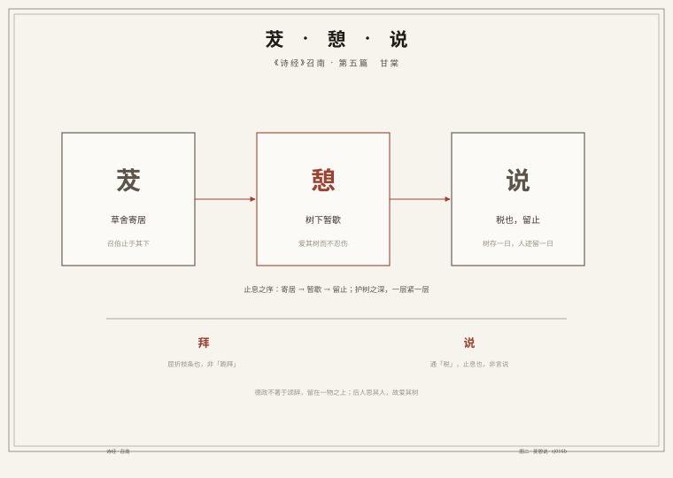

第十六篇 甘棠
召南 · 之二 SJ016
朗读 · 普通话
依经文正文朗读，句读从文；不配乐、不改速、不加拖腔。全库同一音色（豆包 TTS），非播音员录制。
一 解题
诗三判：
- 谁在说：一个甘棠树下的后人。他不说召公的功业，只说这棵树不可动。
- 说什么事：三章反复叮嘱：这棵甘棠，不可剪、不可伐、不可败、不可拜；因为召公曾在它下面止息过。
- 为何编在此：召南写「已成之后靠什么维持」，此篇维持的是「人」——前人留下的德政，不靠碑传，留在一棵树上。民爱其树，即思其人。
《毛序》：「《甘棠》，美召伯也。召伯之教，明于南国。」——直以美召伯为说。
朱子《诗集传》：「召伯循行南国，以布文王之政，或舍甘棠之下。其后人思其德，故爱其树而不忍伤也。」——朱子补出「后人思其德，不忍伤树」一层，与诗中三「勿」字相应。
本库的看法：这首诗的骨在「不伐一树，是留一人之迹」。
全篇无一字及召公之贤明，只护一棵树；德政不在颂辞里，在物上。树存一日，人迹留一日。
二 经文
第一章
蔽芾甘棠，勿翦勿伐，召伯所茇。
第二章
蔽芾甘棠，勿翦勿敗，召伯所憩。
第三章
蔽芾甘棠，勿翦勿拜，召伯所說。
分章：毛传、朱子皆三章，章三句。三章只换六个字：伐／败／拜，茇／憩／说。前三字说损伤之由轻而重，后三字说召伯止息之事；复沓之中，护树之意一层紧一层。
三 韵读
| 一 |
伐、茇 |
月部 |
| 二 |
敗、憩 |
月部（祭部旁转） |
| 三 |
拜、說 |
月部 |
三章同押月部入声，声短而促，像再三叮嘱的口气。末章「说（税）」字收住全篇——止于树下，也就此把这棵树留下了。
四 字义名物
- 蔽芾（bì
fèi）——茂盛貌，枝叶覆蔽荫密。不是「蔽罪」之蔽。
- 甘棠——杜梨，棠梨之一种，木高大，实小而甘。
- 翦（jiǎn）——剪，剪除枝叶。
- 伐——砍伐树干。
- 召伯——召公奭（召康公），周初大臣，巡行南国，听讼断政事于棠下。不是东周召公虎；时代先后不同。
- 茇（bá）——草舍；此言召伯曾止息于其下、草舍寄居。
- 敗——折坏，毁伤枝叶。
- 憩（qì）——休息。
- 拜——屈折，使枝条弯下；一说拔。不是「跪拜」之拜。
- 說——通「税」（tuì），止息。不是「言说」「悦怿」；与《草虫》「我心则说」音义不同。
五 今译
第一章
茂盛的甘棠树，不要剪它，不要砍它——召伯曾在这草舍般的树下止息。
第二章
茂盛的甘棠树，不要剪它，不要折坏它——召伯曾在这树下休息。
第三章
茂盛的甘棠树，不要剪它，不要弯折它——召伯曾在这树下停驻。
译注：「茇」译「草舍般的树下止息」，「憩」译「休息」，「说」译「停驻（税，止息）」——三字是止息的递进：寄居、暂歇、留止。「拜」译「弯折」，不作跪拜解。
六 章旨
一章：所茇。召伯草舍寄居其下；伐树是连根去其人之迹，戒最重。
二章：所憩。召伯休息其下；折坏枝叶，是伤其荫。
三章：所说（税）。召伯留止其下；弯折枝条，亦是不忍。
三章合起来：损伤之序是伐→败→拜（由干而枝而条），止息之序是茇→憩→说（由舍而歇而留）。
护树的层次与思人的深浅，两两相配。
七 诗教
- 兴：以甘棠起兴，树即所思之人所止之物；所兴即所护。
- 观：可观一「思」。后人怀德，不立颂辞而护遗物；物在则人在。
- 群：一邦之人共护一树；爱其树是共有的怀念，非一人私意。
- 怨：无怨。无一句追叹召伯之去，只以三「勿」叮嘱当下。
八 分寸与边界
- 不可把「拜」解作跪拜。此处是屈折枝条；与拜跪之礼无关。
- 不可把「说」读作言说或悦怿。说通「税」，止息也；《草虫》「则说」为悦，二篇同字异训，不可混。
- 不可把召伯读作东周召公虎。此是周初召公奭，分陕而治、布政南国者。
- 不可把此篇读成泛泛的「爱树诗」。三「勿」皆有来由——为召伯所止；脱开思人之旨，树便只是树。
- 不可坐实召伯听讼的具体地点。棠下决狱是《史记》所传故事；诗中只言「茇、憩、说」，不记政事。
九 存疑
- 甘棠为何树：一说杜梨（棠梨），一说棠棣，一说梓类。本库从毛传「甘棠，杜也」，取棠梨。
- 「拜」之训：一说屈折（马瑞辰），一说「扒」（攀），一说拔。本库取屈折。
- 「说（税）」之读：说通税，止息；一说「说」即悦，民悦其政。本库从「止息」，与茇、憩同义相贯。
- 茇、憩、说是否三事：一说皆止息之异文，复沓而已；一说有久暂浅深之别。本库取递进，亦存复沓之说。
- 编次之疑：此篇与《采蘩》《采蘋》同卷，皆咏召南之化；一说本为召公后人颂德之乐，编次入风。本库存录。
十 跨典
- 《史记·燕召公世家》「召公巡行乡邑，有棠树，决狱政事其下……后人思之，思其人犹爱其树」——此篇本事之所出。
- 《周南·樛木》「南有樛木，葛藟累之」——同以树木起兴；彼写依附之安，此写留迹之思。
- 《召南·采蘩》「夙夜在公」——同卷召南之化；彼写奉事之敬，此写怀人之爱。
- 《左传·召公》诸篇称召公奭——周初召公与东周召公世系相承，读《诗》者宜分别。
- 《论语·八佾》「人而不仁，如礼何」——德之不可见者，托于物而后见；甘棠即其物。
十一 双卡与图
双卡五对：
| 伐（砍干） |
败（折枝） |
| 拜（屈条） |
跪拜（误训） |
| 茇（草舍寄居） |
憩（休息） |
| 说（税，止息） |
言说·悦怿（误训） |
| 甘棠（留人之迹） |
颂辞（德政不著于辞） |
图一 · 甘棠·茇憩说 名物图

图二 · 茇 · 憩 · 说 义理图
读图三处：
- 棠树冠大而荫密：「蔽芾」二字在枝叶的覆蔽，不在花；图左格画满冠之树，树干只露一段。
- 茇、憩、说三处都是树下：中二格画草舍、坐息、留止三种姿态，皆不离树荫；人是主角的影子，树是主角。
- 三「勿」护的是树，念的是人：右格不画召公形貌，只留一段树下空处；思人之意，在空处。